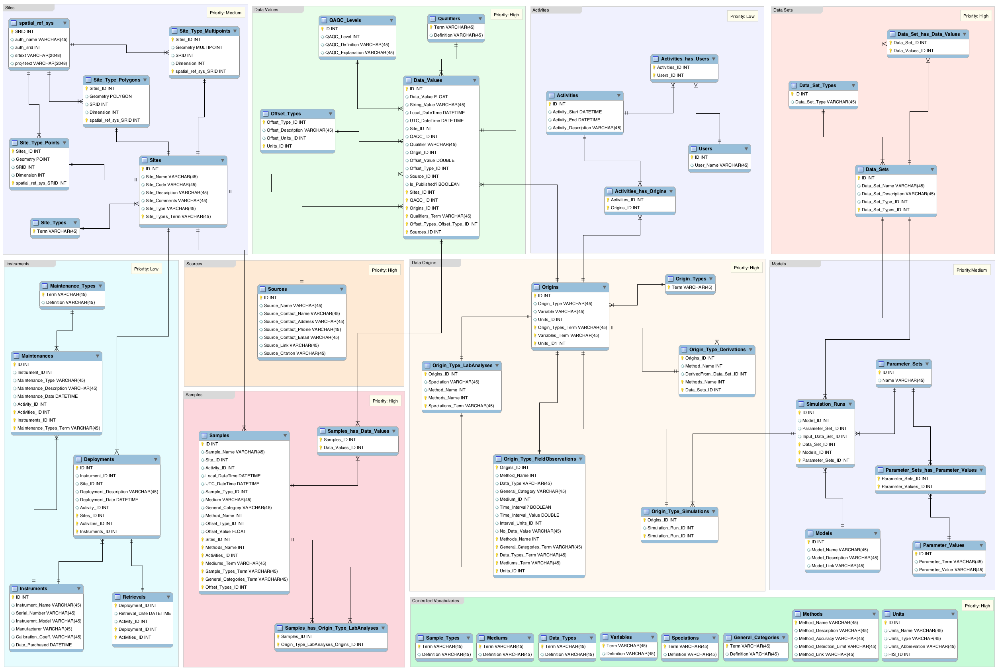
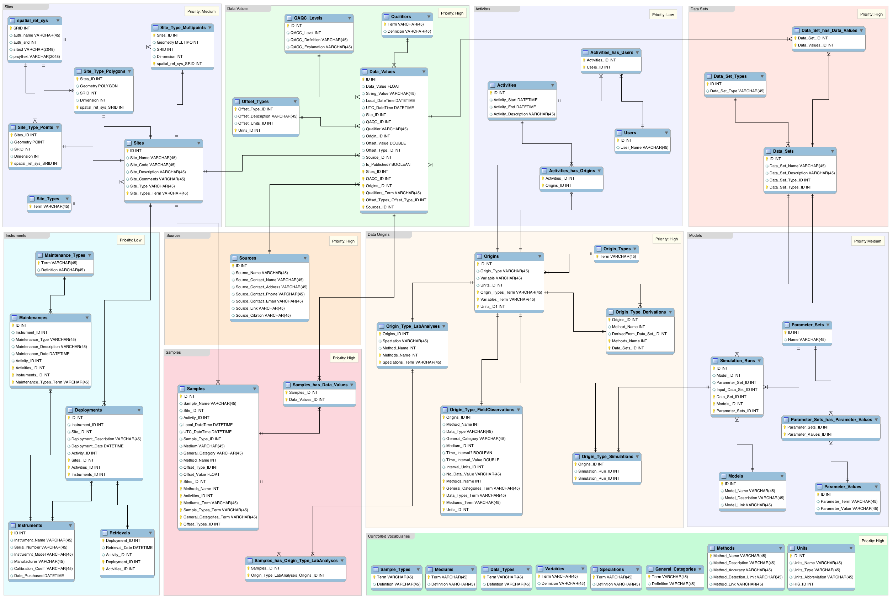

Documentation
 YOGO
YOGO
VOEIS is a YOGO Data Management Framework (YDMF) application. The YOGO framework is a set of software tools developed at Montana State University for rapid assembly of data management applications. The framework is database agnostic, and supports data versioning and evolving schemas. As an added bonus, it's completely open source! Users interested in learning more should check out the YOGO website: http://yogo.msu.montana.edu
VOEIS
Vision: To develop and deploy an integrated sensor based ecological informatics system through extensive collaborative research efforts between a consortium of academic entities in the states of Montana and Kentucky. An integral part of our vision is understanding the greater concepts and processes that govern the underlying informatics infrastructure and software.
Data is a collection of typed values and associated meta-data.
Data is organized according to a schema which determines relationships and multiplicities.
Raw data may come in many formats depending on the sensor equipment that is used.
Raw data can be parsed in order to get it into some format that implements a schema. Depending on the schema, loss of fidelity and semantics is possible.
After parsing, data and its associated meta-data becomes part of the main trunk.
A user can then work in a private sandbox. A private sandbox is in essence a branch of the main trunk with a private copy of the data.
Inside a sandbox, a user can tag the data by effecting changes to it. Changes can be as simple as manual datum changes to as complex as running low pass or high pass filters. Each change (filter) adds its own tag.
Tagged data can be merged back into the main trunk.
QA and QC is the process of overseeing that changes made to the main trunk (merged) are valid.
QA and QC processes can be manual or automated.
Tags can be kept in the metadata
Changes deemed invalid can be rolled back because they are tagged.
A data HUB is part of VOEIS. It is comprised of the tools that parse input sensor data (real time or manual) and the software that houses the data itself (HIS or otherwise).
In this section we capture descriptions of the requirements that guided the development of VOEIS in plain english. These requirements were obtained from multiple sources, including interviews with stakeholders, technical documents, etc. Note that some of these requirements are very high level and multiple task decompositions are needed to refine and understand them better.GUI: Ability to see a map of a project
Ability to construct simple and complex queries to obtain earth science data at a given point in time and space
Ability to add information such as photos, links to other data, on-site physically collected data, monthly samples, etc. Basically, the ability to group data and to annotate individual datum or entire data sets with additional information that is not temporally or spatially located.
Support the generation of simple project activity and/or data reports
Scripting capabilities for QAQC
Ability to organize data for efficient dissemination
Interface for simulation models
Web based secured access to sensors and high performance visualization and simulation engines
APIs to tie into high performance computing
Data paths to facilitate routing of data to publication gateway(s)
Robust validation module for quality control. During QC, errors are corrected, data is annotated, and metadata is created
A robust data provenance module
A common format for storage and access via local, regional and global hubs. This is basically an interoperability requirement
Develop or leverage existing software to facilitate the transfer of data from field sensor arrays, data loggers and analytical equipment into central data servers
Develop or leverage software modules to allow access to data, manage data, provide authentication, etc.
 The VOEIS data model is loosely based on the CUAHSI HIS Observation Data Model (ODM). In fact, the original data model used in VOEIS was the ODM. However, as the diversity of users and use-case needs expanded in VOEIS, it became necessary to adjust the data model to accommodate a broader array of data types. The resulting data model should be familiar to users of the ODM, but boasts some unique characteristics that improve its extensibility to incorporate new data types and provide a mechanism for robust sample tracking, lab personnel tracking, and field sensor deployment tracking/management.
VOEIS Data Model Entity Relationship Diagram
The Virtual Observatory and Ecological Informatics System (VOEIS) provides a framework for data acquisition, analysis, model integration, and display of data products from completed workflows including geo-spatially explicit models, graphs from statistical analyses, GIS displays of classified ecological attributes on the landscape, and 3-D visualization models of waterscape and landscape processes. VOEIS is a an operating system independent web application built with Ruby on Rails on a PostgreSQL backend. At the core of the VOEIS is the VOEIS Data Hub, an application to enable coherent data management for data collected from streaming sensor networks, generated from laboratory experiments on samples taken in the field, and recorded from direct field observations. The VOEIS Data Hub is implemented using the YDMF, which contributed significantly in three specific ways: 1) rigorous authentication and authorization requirements, 2) static data models, and 3) importing and exporting data to external data sources.
Vision: To develop and deploy an integrated sensor based ecological informatics system through extensive collaborative research efforts between a consortium of academic entities in the states of Montana and Kentucky. An integral part of our vision is understanding the greater concepts and processes that govern the underlying informatics infrastructure and software.
Important Guiding Concepts
In this section we capture descriptions of the requirements that guided the development of VOEIS in plain english. These requirements were obtained from multiple sources, including interviews with stakeholders, technical documents, etc. Note that some of these requirements are very high level and multiple task decompositions are needed to refine and understand them better.
Stakeholder Requirements
Development guidance from various documents
 The VOEIS data model is loosely based on the CUAHSI HIS Observation Data Model (ODM). In fact, the original data model used in VOEIS was the ODM. However, as the diversity of users and use-case needs expanded in VOEIS, it became necessary to adjust the data model to accommodate a broader array of data types. The resulting data model should be familiar to users of the ODM, but boasts some unique characteristics that improve its extensibility to incorporate new data types and provide a mechanism for robust sample tracking, lab personnel tracking, and field sensor deployment tracking/management.